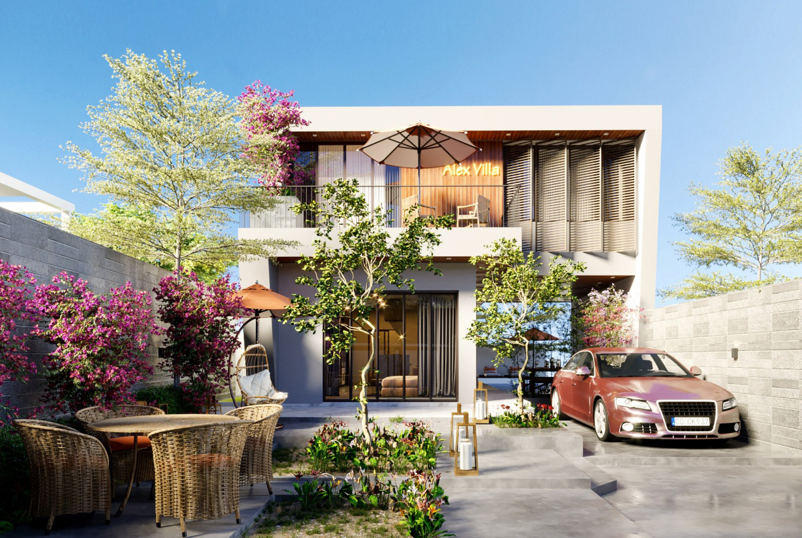
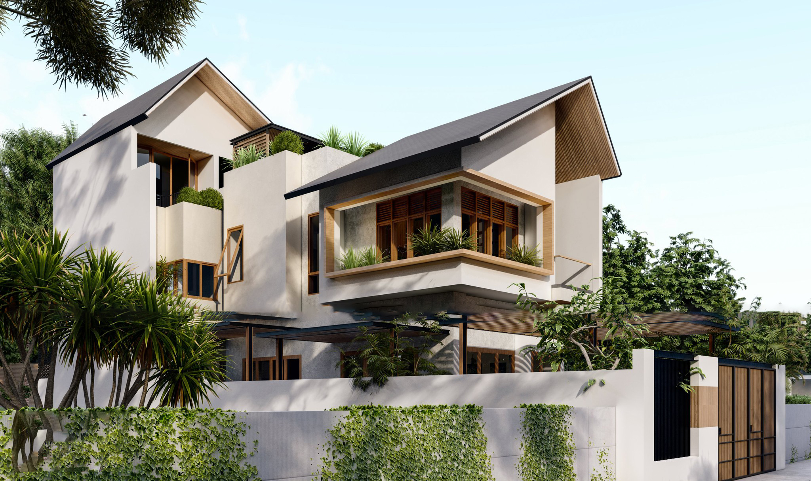
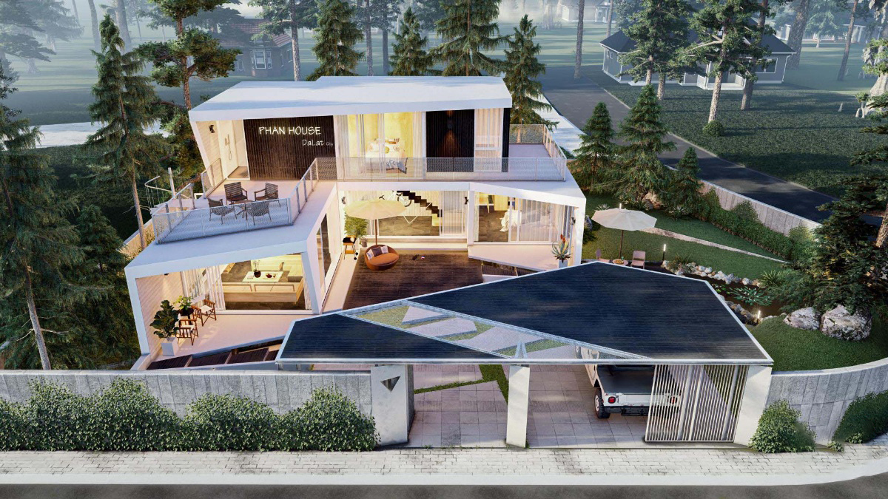
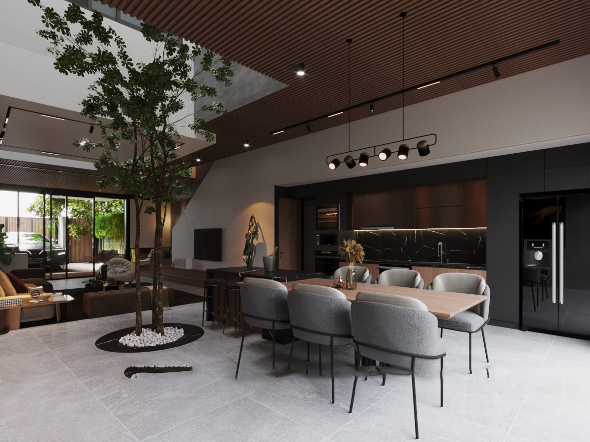
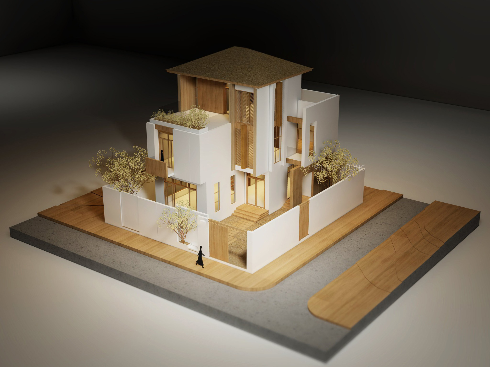

Sự sáng tạo luôn được đề cao trong thiết kế, vì vậy mọi ý tưởng khi hình thành đều thể hiện được sự sáng tạo tuyệt vời mà mỗi Kiến trúc sư đem đến cho công trình của họ. Tuy nhiên, việc hình thành ý tưởng thường sẽ ảnh hưởng bởi nhiều yếu tố, quyết định đến phong cách cho công trình đó. Vậy đó là những yếu tố nào, hãy cùng Nhiệt Đới tìm hiểu qua bài viết dưới đây nhé!
-
Sáng tạo - Innovation
Bản chất của thiết kế thẩm mỹ là sáng tạo. Sáng tạo giúp cho công việc thiết kế trở nên có giá trị. Sáng tạo trong thiết kế dựa trên 3 yếu tố: (1) ý tưởng, (2) thông tin truyền đạt, (3) thẩm mỹ.
Một thiết kế nhà ở chỉ đơn thuần nhấn mạnh vào thỏa mãn chức năng, mà không xem xét đến thẩm mỹ sẽ không mang lại một thiết kế mang tính tương tác và tạo nên sự thú vị cho ngôi nhà đó. Do đó, đối với các Kiến trúc sư, mỗi khi có cơ hội để được thiết kế, cần phải cố gắng hết mình, không chỉ làm tốt các điều kiện đã đưa, mà phải tìm tòi để những thiết kế được tiến xa hơn, có ích hơn và đẹp hơn. Điều này đòi hỏi có niềm đam mê, sự tìm hiểu, suy nghĩ thận trọng, quan sát và tìm tòi cái mới, tuy nhiên cũng trong sự giới hạn của khả năng để có thể tạo ra những thiết kế mang chất lượng cao.
Vì vậy, để cho ra đời một tác phẩm nhà ở được thiết kế sáng tạo và mang tính ứng dụng cao, KTS phải có những kỹ năng và hiểu biết thực tế, cũng như áp dụng tốt những nguyên tắc trong thiết kế để có được những sản phẩm thiết kế chất lượng và mang tính độc đáo riêng theo từng hoàn cảnh khác nhau.

-
Mỗi ngôi nhà là một hoặc nhiều câu chuyện - Storytelling / making
“Mỗi cây mỗi hoa, mỗi nhà mỗi cảnh” thể hiện tính đa dạng trong cuộc sống, không gia đình nào giống gia đình nào, từ đó có thể hiểu không ngôi nhà nào giống ngôi nhà nào, kể cả họ cùng mua những ngôi nhà được xây dựng hàng loạt, giống nhau kiểu công nghiệp.
Mặt khác, công trình kiến trúc nhà ở thành công là một sản phẩm của nghệ thuật được cá tính hóa, cá nhân hóa. Và nó là sự kết hợp của tính công năng (theo nhu cầu của người sử dụng), thẩm mỹ (theo sáng tạo của người thiết kế) và những yếu tố kỹ thuật (theo khả năng của người xây dựng). Nó tạo ra những cảm giác vô hình và những thứ hài hòa với người sử dụng.
Công trình kiến trúc nhà ở thành công là một tinh hoa của nghệ thuật, nó mang những tầng lớp cũng như chiều sâu và đặc sắc cho người sử dụng có thể cảm nhận. Nó cũng mang lại ký ức trong cuộc sống của người sử dụng, tạo ra những giá trị ký ức mới gắn liền với các không gian. Đồng thời nó cũng tạo cảm xúc biểu cảm liên đới tới xã hội và văn hóa.

-
Kiến tạo không gian - Place Making
Khi thiết kế nhà ở, Kiến trúc sư sẽ làm việc trong một môi trường thiết kế liên đới và tổng thể xung quanh công trình. Điều này có nghĩa là khi thiết kế nhà ở, ngôi nhà phải được điều tiết một cách hài hòa vào trong từng tầng lớp của môi trường đó. Và cùng lúc phải tạo ra tính chất đặc thù cho không gian chung và một sự cảm nhận riêng biệt đối với từng người sử dụng công trình.
Thiết kế nhà ở tuy luôn mang những thứ được lên kế hoạch trước thông qua các bản vẽ được thiết kế theo những nguyên lý chung nhất, nhưng vẫn luôn luôn tồn tại những thứ không được kế hoạch hoặc những yếu tố chưa có thể biết hoặc hiểu được phụ thuộc vào cảm hứng và phong cách sống của người sử dụng.
Do vậy, kiến tạo một không gian ở, có thể là tôn trọng những đặc tính sinh hoạt của người sử dụng, nhưng cũng có thể là tạo một phong cách sống mới thông qua những yếu tố mới đề xuất cho không gian. Khi có thể hòa nhập và tương tác hai vấn đề này, thì người thiết kế đã bước được một bước dài trong quá trình thiết kế cho công trình nhà ở tương lai đó.
-
Những yếu tố tương tác và liên quan từ bên ngoài - Context
Một ngôi nhà luôn gắn liền với một bối cảnh về tự nhiên lẫn xã hội. Khi mỗi ngôi nhà được tạo ra, bản thân nó đã mang những tính chất đặc biệt bởi các yếu tố thời gian, không gian, bối cảnh lịch sử, chủ đầu tư, kinh tế và các tính năng cũng như chức năng của công trình.
Nhà ở được thiết kế không chỉ dựa trên việc tổ chức các không gian chức năng bên trong một cách hợp lý mà đòi hỏi phải dựa trên cả những yếu tố tương tác và liên quan từ bên ngoài công trình. Quy hoạch và thiết kế công trình nên cố gắng một cách tỉ mỉ trong sự kết nối những sự liên đới này ở mức độ hợp lý và có ý nghĩa. Không nên tạo ra những context mới mà chưa qua bước nghiên cứu cũng như thử nghiệm. Tuy nhiên điều đó không có nghĩa là người thiết kế quá phụ thuộc vào bối cảnh xung quanh sẽ làm mất đi vai trò làm chủ và cá tính kiến trúc của công trình. Một phương cách hợp lý nhất là nên làm cho công trình và môi trường xung quanh nó được kết hợp theo hướng cải thiện và làm cho môi trường đó tốt hơn.

-
Phát triển bền vững - Sustainability
Nhà ở bền vững sẽ tạo nên những cộng đồng bền vững, tiêu thụ nguồn tài nguyên tự nhiên theo cách hiệu quả nhất, nâng cao sức khỏe, tiện nghi cho người ở, giảm thiểu tác động đến môi trường… Những nghiên cứu về nhà ở cho thấy sự bền vững này phải cân bằng cả ở 2 khía cạnh là bền vững kinh tế - xã hội và bền vững môi trường. Nói cách khác, nhà ở bền vững không thể nhìn từ các khía cạnh bền vững độc lập mà phải xem xét mối liên hệ tổng thể, mối tương quan giữa công trình và các vấn đề kinh tế - xã hội cũng như môi trường như ô nhiễm, tắc nghẽn giao thông, sử dụng nhiên liệu và năng lượng, hình thái công trình, vật liệu bảo tồn năng lượng lồng ghép với những thiết kế địa phương…
Do đó, nhà ở nên được thiết kế một cách cẩn thận để có thể giảm thiểu những tác động tiêu cực, mặt khác cần tham khảo, học tập, nghiên cứu tìm kiếm cách phát triển và áp dụng những yếu tố của kỹ thuật phát triển bền vững vào trong những thiết kế.
-
Tính trước sau hay tính tương đối và tính quy luật - Hierarchy & order
Nhà ở phải tạo ra sự rõ ràng ở các không gian theo sự phân cấp các hoạt động và đối tượng sử dụng. Hình dáng cũng như tỉ lệ các không gian nên được tạo ra một cách hài hòa và sâu sắc trong sự tương quan và tương phản nhằm tôn trọng tính thiết yếu của từng không gian. Các không gian phải được phân chia theo từng khu vực chức năng hoặc các đặc tính sử dụng, hoạt động của không gian đó. Hình thức hài hòa và tinh tế trên tinh thần đơn giản trong từng không gian là những điều kiện thành công trong quá trình thiết kế nhà ở. Tuy nhiên, đôi khi sự “phức hợp” trong nhà ở có thể sẽ làm tăng tính phong phú của công trình thông qua các biện pháp kết nối tạo nên các mối quan hệ không gian hấp dẫn.
-
Công năng - Function
Cần phải khẳng định là không có ai xây ngôi nhà xong chỉ để ngắm nhìn, bởi vậy ngoài vẻ đẹp, ngôi nhà còn phải rất tiện nghi để có thể phục vụ tối đa nhu cầu sinh hoạt của con người. Thậm chí trong nhà ở, người ta còn đưa ra nhu cầu tiện nghi lên hàng đầu. Nói cách khác, kiến trúc mỗi ngôi nhà nên (và phải) là sự phản chiếu của tính công năng của công trình.
Việc phân chia công năng được coi là quan trọng nhất trong thiết kế kiến trúc. Ngôi nhà có được thuận lợi trong việc sử dụng hay không, có được tiện nghi hay không phụ thuộc rất nhiều vào cách sắp xếp, tổ chức các không gian chức năng trong đó.
Một thiết kế mang tính công năng sẽ thể hiện được cái mà người sử dụng muốn và cần, nó cũng chính là cái tối thiểu mà người thiết kế có thể làm được và ít ra nó tạo ra được cảm giác thực sự - nhiều khi từ đó mà có thể xoay chuyển để mang lại những vẻ đẹp thiết thực và gần gũi. Nhưng đặc điểm quan trọng nhất trong nhà ở vẫn là tính công năng luôn có thể đáp ứng cho hiện tại và hội nhập với những yêu cầu và thay đổi của tương lai. Do đó, một thiết kế nhà ở không phải là những bản vẽ mang tính “mệnh lệnh bắt buộc” mà hãy xem là những “kịch bản ban đầu” dựa trên sự chuyên nghiệp hóa những nhu cầu của người sử dụng. Kịch bản này có thể được thay đổi như một chương trình thực tế do sự tương tác giữa nhà thiết kế với người sử dụng và cũng như người sử dụng với bối cảnh xung quanh họ.

-
Giao thông, lưu thông hay sự lưu chuyển giữa các không gian - Circulation
Giao thông sẽ là một công cụ quan trọng đối với quá trình sắp xếp hay tổ chức các không gian trong khi thiết kế nhà ở. Sự lưu thông của con người luôn diễn ra ở nhiều cấp độ, từ tổng thể khu vực cư trú đến cục bộ ngoài và trong công trình, nên đòi hỏi một sự rõ ràng, giúp công năng của công trình được nâng cao. Chúng ta phải nghiên cứu tính chất liên kết của sự di chuyển trong mỗi công trình, từ đó có thể tạo ra những sự tinh tế sự bất ngờ của không gian đối với người tham quan công trình.
Tổ chức giao thông tốt sẽ đem đến sự sử dụng tiện lợi các không gian, tiết kiệm thời gian và công sức di chuyển trong ngôi nhà. Do đó, một thiết kế nhà ở hợp lý là một thiết kế dựa trên việc tổ chức giao thông hợp lý, phù hợp với nhu cầu sử dụng và hoàn cảnh đặc thù từng gia đình.
-
Kết cấu, sự kết nối, hay sự hỗ trợ - Structure
Kết cấu được xem như là bộ xương của mỗi công trình mà dựa trên đó các không gian kiến trúc được các nhà thiết kế phát triển. Do vậy, để một thiết kế kiến trúc hấp dẫn, đôi lúc Kiến trúc sư phải tiếp cận kết cấu ngay từ đầu, kết hợp với ý tưởng của mình, đặc biệt là đối với nhà ở cao tầng để cho ý tưởng có thể xuyên suốt cho dù hệ thống nâng đỡ này thường được xem là yếu tố kỹ thuật thuần túy, mặc dù chúng hoàn toàn có thể biểu lộ tinh thần của một công trình theo cách riêng của mình. hệ thống này phải luôn mang tính chất kết hợp, tổ chức, trật tự rõ ràng khi công trình được tạo ra.

-
Vật liệu và chi tiết - Materiality & detailing
Những chất liệu hay bề mặt của vật liệu tạo ra mà khi chúng ta chạm vào, rất nhiều lần chúng trở thành điểm đặc biệt riêng không thể quên được của công trình. Cho nên chúng luôn phải được coi trọng, trong quá trình thiết kế, phải biết mỗi vật liệu khi áp dụng vào công trình đều phải mang tính hợp lý và ý nghĩa. Ngoài ra, những kết cấu chi tiết để có thể lắp ráp những vật liệu vào công trình, sẽ luôn đóng góp vào toàn thể vẻ đẹp của công trình. Điều này càng khẳng định rằng, người thiết kế luôn phải quan sát tỉ mỉ mọi chi tiết mà mình tạo ra cho công trình. Đặc biệt hơn nữa là sự phối hợp giữa các vật liệu vào với nhau để đem lại hiệu quả về vẻ đẹp cũng như sự bền vững cho công trình.
Nguồn: Kiến trúc nhà ở - Hiểu biết & Thiết kế qua minh họa - KTS. Trần Minh Tùng